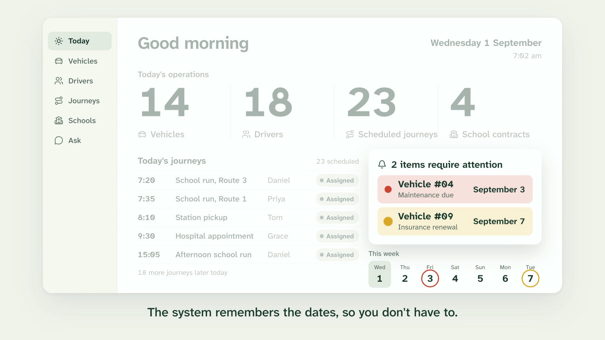
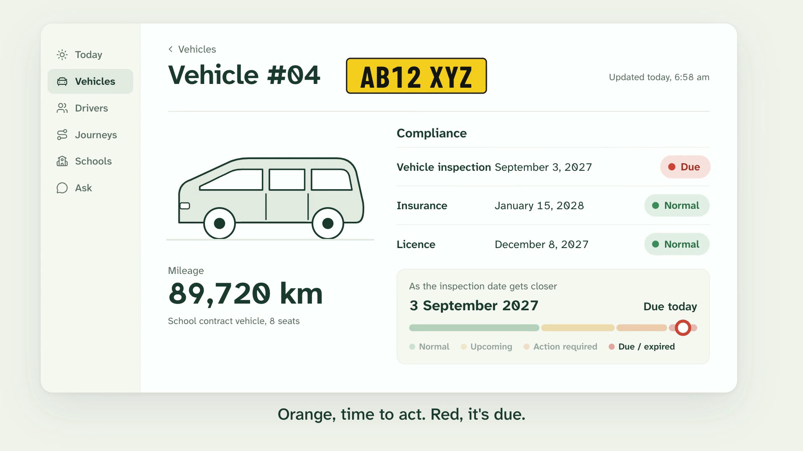
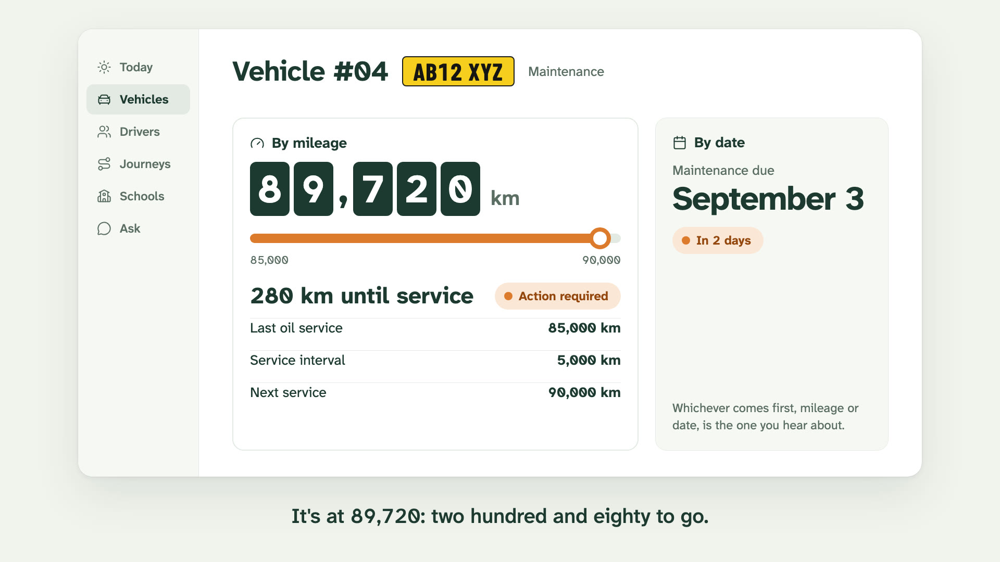
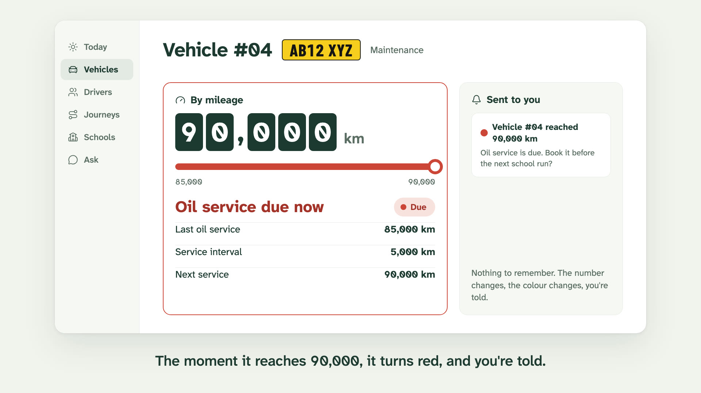
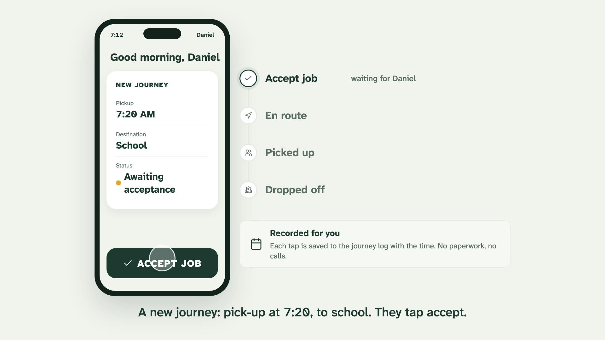
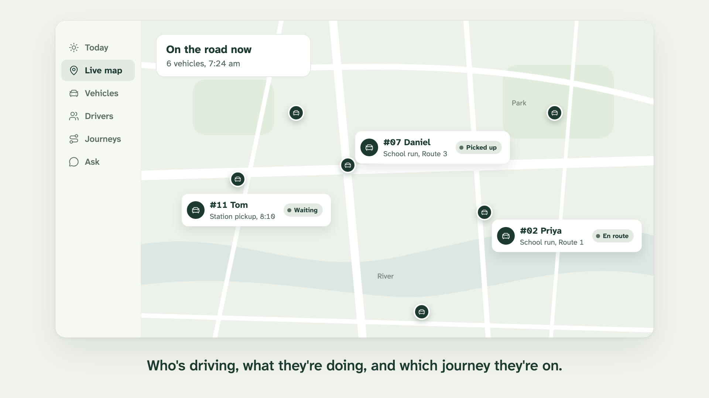
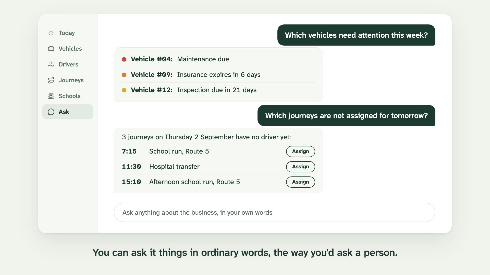
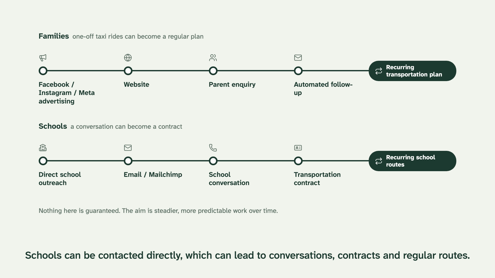
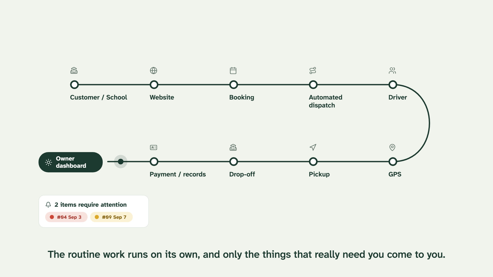
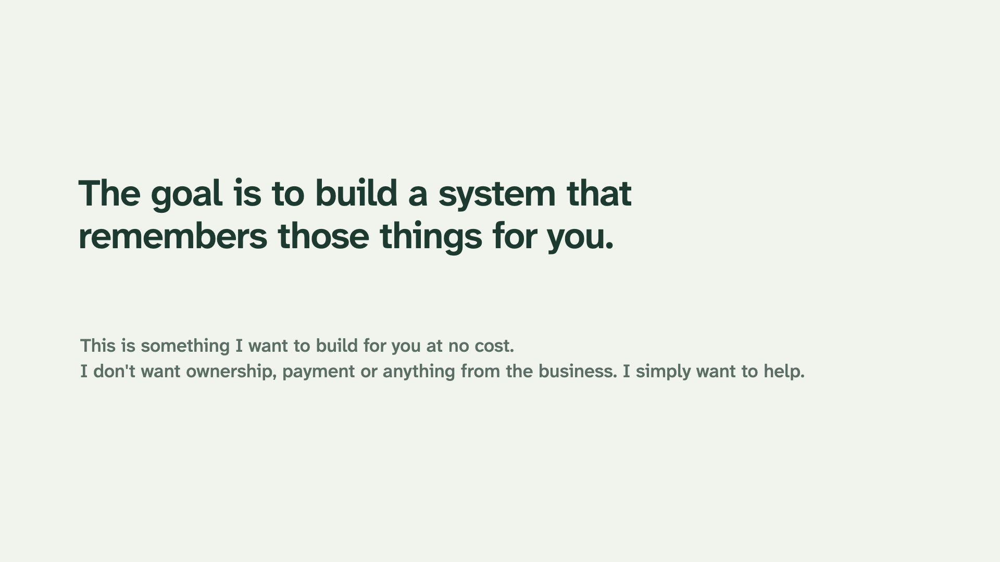

A calmer way to run the business
These are the first 27 seconds of the explainer, finished: voice, captions and music included. Below them is a styleframe for every other scene in your script, and the full four-minute timing sheet. Every number on screen is copied exactly from your brief.
Colour only appears when something needs her
Every screen is quiet green ink on white. The only colour in the whole film is a status colour, always paired with a word, so she learns one rule in the first minute and it holds for the rest: if it's coloured, it's something to look at.
- One idea per momentEach number lands on the word the narrator says. Nothing moves unless it's being talked about.
- Type built for tired eyesAtkinson Hyperlegible, designed by the Braille Institute so 1, l and I or 0 and O can't be mixed up.
- Dates that agree with each otherThe dashboard is dated Wednesday 1 September, so September 7 really is "in 6 days" when she asks in Scene 6.
- Built like real softwareThe screens are made in code, not drawn, so changing a number, name or date is a quick edit, not a redraw.
The rest of the film, frame by frame
Finished design frames for every remaining scene, at the film's real size. These are the frames the animation moves between.










Timing sheet, about four minutes
Narration is a first draft written from your brief, in plain words. The marked rows are the finished sample above.
Four things only you can tell me
Miles or kilometres?Your brief says km, so the screens say km. UK vehicles usually read in miles; it's a one-line change.
Her business nameThe screens greet her with the date instead of a name. Add the name or logo and it goes in the corner of every screen.
Who speaks the closingYour own recording from a phone, cleaned up, will mean more to her than any narrator.
Real driver namesDaniel, Priya, Tom and Grace are stand-ins, as are the route numbers.
On hire you receive the clean 1080p master, the SRT captions, the voice and music tracks, and the full editable project.